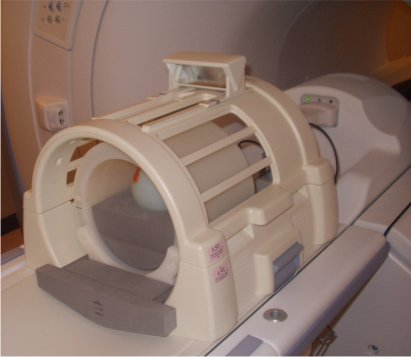
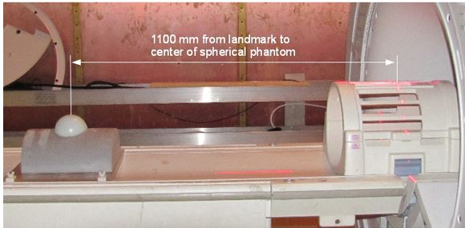
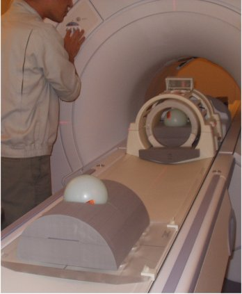

- 00000018WIA30F98F20GYZ
- id_131062804.0
- Feb 21, 2021 9:11:43 PM
Echo Planar Test (EPT)
Prerequisites
| Required persons | Preliminary requirements | Procedure | Finalization |
|---|---|---|---|
| 1 | Not Applicable | 2 hours | Not Applicable |
| Item | Quantity | Effectivity | Part number | Manufacturer |
|---|---|---|---|---|
| 100-mm Sphere Phantom for 1.5T | 2 | - |
46-317586G1 | - |
| EPI Foam Positioner, Body | 1 | - |
2170481 | - |
| Grafidy Base Plate | 1 | - |
46-271410G1 | - |
| Head TLT Loader Positioner | 1 | - |
5110241 | - |
| Head Loader | 1 | - |
46-287899G1 | - |
| ||||
Startup
About this task
EPT combines the functionality of the current B0 Dither Calibration, Group Delay Calibration and B0 Image Test into a single tool with a simple user interface. The output is suitable for remote support access, trending, and automatic checking of results against acceptance limits. In addition, EPT automatically updates the EPI calibration files when authorized by the user.
Procedure
- Place an EPI foam phantom holder and a 100-mm sphere phantom
and phantom loader in the head coil, as shown in Figure 1Landmark on
the center of the sphere, but do not advance to scan yet.
Figure 1. EPI Phantom Positioning 
Figure 2. Landmark Marker 
- Place an EPI foam phantom holder and a second 100-mm sphere
on the Grafidy base plate, as shown in Figure 3. Move the table
into the bore to 1100 mm from landmark. Slide the Grafidy base plate
so the center of the 100-mm sphere is at the axial alignment light,
and then press the MOVE TO SCAN button.
Figure 3. Landmark 100–mm sphere phantom 


Image-based Short Cross Term Eddy Current Tool
About this task
If the B0 Image fails, check Shim and Grafidy, then quit EPT and run the Image-based Short Cross Term Eddy Current tool. This tool may reduce EPI ghosting and is designed specifically to work in conjunction with the EPT. If B0 Image passed, you may proceed to Test Termination Procedure. However, consider running the Short Cross Term Eddy Current Tool, because it may improve image quality.
Procedure
Test Termination Procedure
Procedure
Finalization
Procedure
- Reset the TPS to bring the system back into a known mode.
- Do a test scan to ensure the scanner is working properly before customer turn over.